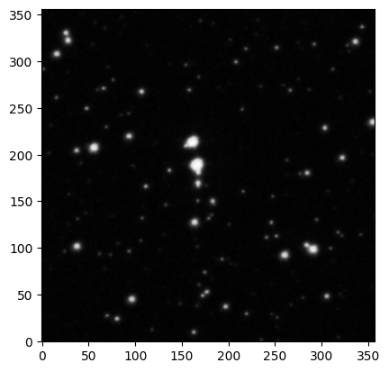
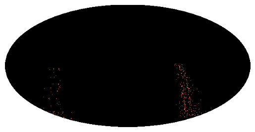
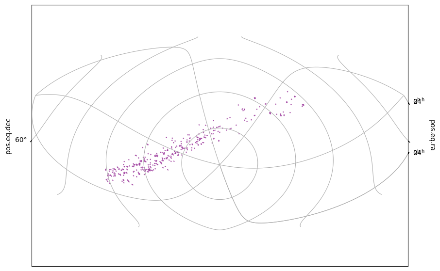
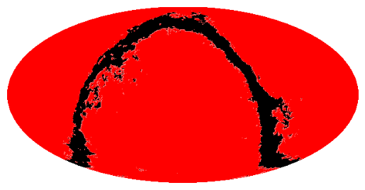
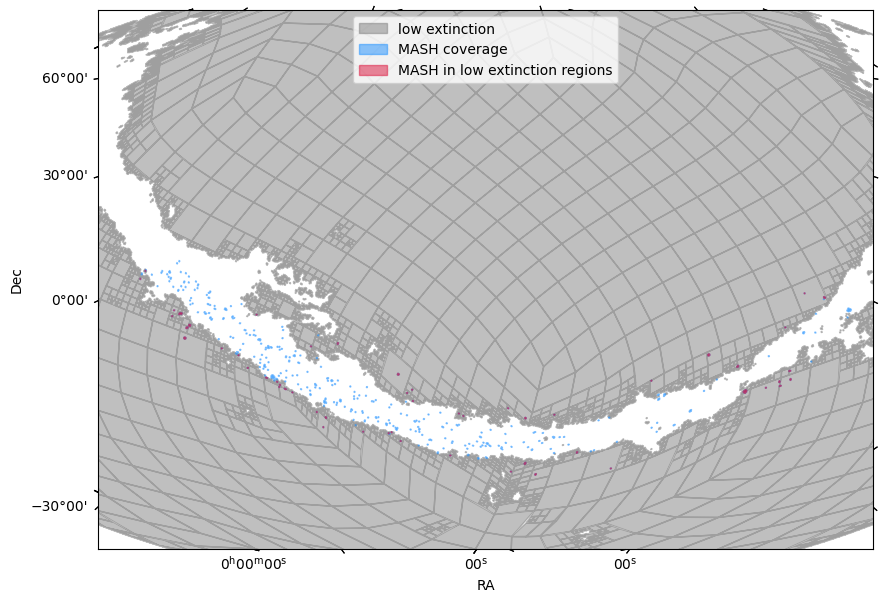
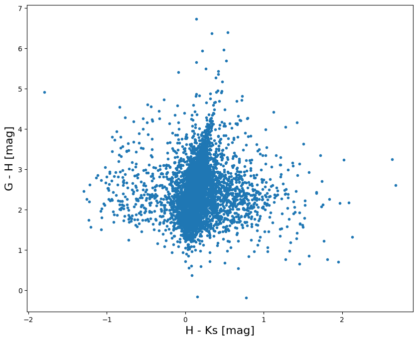

Advanced usage of MOCs to explore complex regions of interest#
Stefania Amodea¹, Matthieu Baumann¹, Thomas Boch¹, Caroline Bot¹, Katarina A. Lutz¹.
Université de Strasbourg, CNRS, Observatoire Astronomique de Strasbourg, UMR 7550, F-67000, Strasbourg, France
Thomas Boch and Caroline Bot wrote the original version of this tutorial, available on the EURO-VO tutorials page. It was presented at the workshop “Detecting the unexpected, Discovery in the Era of Astronomically Big Data”. The version here is an adaptation to jupyter notebooks by the Strasbourg astronomical Data Center (CDS) team.
Introduction#
I have a set of images. I would like to select regions in my observations that are above a given threshold in another survey (e.g. at low extinction), retrieve objects from very large catalogs (e.g. Gaia + 2MASS) in these non-trivial shapes and not-necessarily-connected regions, and combine them to visualize some quantities (e.g. color color diagram).
# Standard Library
from pathlib import Path
# Astronomy tools
import astropy.units as u
from astropy.coordinates import Angle, SkyCoord, match_coordinates_sky
from astropy.io import fits
# Access astronomical databases
import pyvo
from astroquery.vizier import Vizier
# Moc and HEALPix tools
import cdshealpix
import mocpy
# For plots
import matplotlib.pyplot as plt
# Data handling
import numpy as np
Step 1: Finding the images#
We want to find all Short-Red images in the Macquarie/AAO/Strasbourg Hα Planetary Galactic catalog (MASH) using the VizieR associated data service.

The VizieR service at CDS inventories astronomical catalogs published in the literature. Some of these catalogs contain data - images, timeseries, spectra, cubes - associated with publications and the tables therein. This data can be browsed and explored through the VizieR-associated data service, linked to the traditional VizieR table service. Here we look for images associated with the MASH catalog of planetary nebulae (Parker et. al. 2006-2008). The MASH fits files are cut-outs extracted from a larger Hα and Short Red survey to constitute a set of regions of interest around planetary nebulae.
To find VizieR-associated data, we use the Table Access Protocol (TAP) with the VizieR endpoint. Through the VizieR TAP endpoint, we can search for tables, their content, and information on associated data.
First, we search for the MASH catalog:
# give the address of the service, you can also directly visit the website
tap_vizier = pyvo.dal.TAPService("https://tapvizier.cds.unistra.fr/TAPVizieR/tap")
# a query that searches for all tables with the words MASH and Parker in their description
query = """
SELECT * FROM tables
WHERE description LIKE '%MASH%Parker%'
"""
mash_catalogues = tap_vizier.search(query).to_table()
mash_catalogues
| schema_name | table_name | table_type | description | utype | nrows |
|---|---|---|---|---|---|
| object | object | object | object | object | object |
| J_MNRAS | "J/MNRAS/412/223/table4" | table | The nine MASH PNe detected and possibly detected in the PMN survey ( Bojicic I.S., Parker Q.A., Filipovic M.D., Frew D.J.) | 9 | |
| J_MNRAS | "J/MNRAS/412/223/table1" | table | MASH PNe detected in the NVSS ( Bojicic I.S., Parker Q.A., Filipovic M.D., Frew D.J.) | 201 | |
| V_combined | "V/127A/mash2" | table | The MASH-II Supplement (from paper II) ( Parker Q.A., Acker A., Frew D.J., Hartley M., Peyaud A.E.J., Phillipps S., Russeil D., Beaulieu S.F., Cohen M., Koppen J., Marcout J., Miszalski B., Morgan D.H., Morris R.A.H., Ochsenbein F., Pierce M.J.,) | 335 | |
| V_combined | "V/127A/mash1" | table | The MASH Catalog of Planetary Nebulae (paper I) ( Parker Q.A., Acker A., Frew D.J., Hartley M., Peyaud A.E.J., Phillipps S., Russeil D., Beaulieu S.F., Cohen M., Koppen J., Marcout J., Miszalski B., Morgan D.H., Morris R.A.H., Ochsenbein F., Pierce M.J.,) | 903 | |
| J_MNRAS | "J/MNRAS/412/223/mpgs2" | table | MASH PNe detected in the MPGS-2 (Cat. VIII/82) ( Bojicic I.S., Parker Q.A., Filipovic M.D., Frew D.J.) | 81 |
In this tutorial, we are interested in the tables belonging to the catalogs V/127A. This includes tables V/127A/mash1 and V/127A/mash2. To have a look at the content of these tables, we look at their first 5 lines like this:
query = """
SELECT TOP 5 * FROM \"V/127A/mash1\"
"""
mash1_head = tap_vizier.search(query).to_table()
mash1_head
| recno | n_PNG | PNG | Name | RAJ2000 | DEJ2000 | GLon | GLat | MajDiam | MinDiam | CS | Morph | Tel | ObsDate | HaExp | HaFld | Comments | img | ImageHa | ImageSr | AssocData |
|---|---|---|---|---|---|---|---|---|---|---|---|---|---|---|---|---|---|---|---|---|
| deg | deg | arcsec | arcsec | |||||||||||||||||
| int32 | str1 | object | object | float64 | float64 | float64 | float64 | float64 | float64 | object | object | object | float64 | object | object | object | object | object | object | object |
| 29 | L | G234.7-02.2 | PHR0724-2021 | 111.05458333333331 | -20.36361111111111 | 234.7045 | -2.2774 | 134.5 | 54.0 | A | SA | 2452672.0 | HA18201 | HA842 | Large, very faint diffuse arcuate nebula; has [NII]~2xH-alpha, nothing in blue | 1029 | img_ha | img_sr | fits | |
| 2 | P | G227.3-12.0 | PHR0633-1808 | 98.35374999999999 | -18.13972222222222 | 227.3207 | -12.0289 | 17.0 | 15.0 | Ea | SA | 2452672.0 | HA18191 | HA926 | Very faint, partial arcuate nebula also observed M1 060100; [NII]~0.8xH-alpha, strong [SII], only weak H-beta in blue - inconclusive | 1002 | img_ha | img_sr | fits | |
| 16 | T | G227.2-03.4 | PHR0705-1419 | 106.41041666666665 | -14.318055555555553 | 227.2852 | -3.4029 | 15.0 | 15.0 | E | SA | 2452668.0 | HA18244 | HA1017 | Small, circular PN around a faint central star; also observed M1 040100; [NII]~0.7 H-alpha, [OIII]>>H-beta | 1016 | img_ha | img_sr | fits | |
| 5 | L | G223.6-06.8 | PHR0646-1235 | 101.60583333333332 | -12.598888888888887 | 223.6338 | -6.8035 | 40.0 | 37.0 | E | SA | 2453788.0 | HA18194 | HA1016 | Slightly oval very faint PN candidate - has [OIII] and H-alpha | 1005 | img_ha | img_sr | fits | |
| 10 | P | G224.3-05.5 | PHR0652-1240 | 103.08458333333331 | -12.67611111111111 | 224.3504 | -5.5463 | 187.0 | 180.0 | I | SA | 2452670.0 | HA18244 | HA1017 | Faint, extended S-shaped emission nebula, possible evolved PN, also observed M1 080100; has [NII]~0.8Ha, [OIII], strong [SII], [OIII]>H-beta | 1010 | img_ha | img_sr | fits |
As you can see, the last column of this table is called AssocData and contains the entry fits. If you look at this table on the VizieR web interface, you can download the associated fits file. Within this notebook, we query the obscore database to get the URLs to the fits file. Using the astropy.io.fits module, we can open the fits files from their URLs.
obs_tap_vizier = pyvo.dal.TAPService(
"https://cdsarc.cds.unistra.fr/saadavizier.tap/tap",
)
query = """
SELECT TOP 5 * FROM obscore
WHERE obs_collection='V/127A'
"""
mash_fits = obs_tap_vizier.search(query).to_table()
mash_fits
| access_estsize | access_format | access_url | bib_reference | calib_level | dataproduct_type | em_band | em_max | em_min | extension | facility_name | has_wcs | instrument_name | obs_collection | obs_id | obs_publisher_did | oidsaada | o_ucd | pol_states | s_dec | s_fov | s_ra | s_region | s_resolution | target_name | t_exptime | t_max | t_min | t_resolution |
|---|---|---|---|---|---|---|---|---|---|---|---|---|---|---|---|---|---|---|---|---|---|---|---|---|---|---|---|---|
| kbyte | spect | meta.code | meta.code | deg | deg | deg | arcsec | |||||||||||||||||||||
| int64 | object | object | object | int32 | object | object | float64 | float64 | int32 | object | int32 | object | object | object | object | object | object | object | float64 | float64 | float64 | object | float64 | object | float64 | float64 | float64 | float64 |
| 610 | application/fits | https://cdsarc.cds.unistra.fr/saadavizier/download?oid=864975549779410945 | 2006MNRAS.373...79P | -1 | image | Optical | 1e-06 | 3e-07 | -- | UKST | 5 | SuperCOSMOS I | V/127A | 1032_sr.fits | ivo://CDS.VizieR/V/127A?res=1032_sr.fits | 864975549779410945 | obs.image | NotSet | -13.784389854801203 | 0.0713021682865721 | 111.43275777455307 | Polygon ICRS 111.46664940645094 -13.81781914701963 111.39832407190251 -13.817324215795937 111.3988758446347 -13.750955924906409 111.46718176614709 -13.751450706358609 | 0.948991575097523 | -- | -- | 51226.0 | -- | |
| 714 | application/fits | https://cdsarc.cds.unistra.fr/saadavizier/download?oid=864975549779410946 | 2006MNRAS.373...79P | -1 | image | Optical | 1e-06 | 3e-07 | -- | UKST | 5 | SuperCOSMOS I | V/127A | 1002_ha.fits | ivo://CDS.VizieR/V/127A?res=1002_ha.fits | 864975549779410946 | obs.image | NotSet | -18.139618250252592 | 0.06807629850604295 | 98.3536194209876 | Polygon ICRS 98.3879823237976 -18.17328539691655 98.31817068063498 -18.172295336426327 98.31926974725019 -18.105945008699248 98.38905491554986 -18.106934677663524 | 0.9487309062128839 | -- | -- | 51158.0 | -- | |
| 754 | application/fits | https://cdsarc.cds.unistra.fr/saadavizier/download?oid=864975549779410947 | 2006MNRAS.373...79P | -1 | image | Optical | 1e-06 | 3e-07 | -- | UKST | 5 | SuperCOSMOS I | V/127A | 1033_ha.fits | ivo://CDS.VizieR/V/127A?res=1033_ha.fits | 864975549779410947 | obs.image | NotSet | -28.97290230510999 | 0.07273587908530431 | 111.5198237403422 | Polygon ICRS 111.55713579830989 -29.006593110324985 111.48129478490598 -29.005543503560524 111.48253597444139 -28.939201209841514 111.5583283925454 -28.94025013401036 | 0.9486651876518051 | -- | -- | 50867.0 | -- | |
| 581 | application/fits | https://cdsarc.cds.unistra.fr/saadavizier/download?oid=864975549779410948 | 2006MNRAS.373...79P | -1 | image | Optical | 1e-06 | 3e-07 | -- | UKST | 5 | SuperCOSMOS I | V/127A | 1002_sr.fits | ivo://CDS.VizieR/V/127A?res=1002_sr.fits | 864975549779410948 | obs.image | NotSet | -18.13962593857754 | 0.06807301936327177 | 98.35359006999442 | Polygon ICRS 98.38795041597254 -18.17329148584167 98.31813924430983 -18.172303630142665 98.31924295149577 -18.105954297342016 98.38902764888365 -18.106941759807857 | 0.9487205770226425 | -- | -- | 51160.0 | -- | |
| 607 | application/fits | https://cdsarc.cds.unistra.fr/saadavizier/download?oid=864975549779410949 | 2006MNRAS.373...79P | -1 | image | Optical | 1e-06 | 3e-07 | -- | UKST | 5 | SuperCOSMOS I | V/127A | 1033_sr.fits | ivo://CDS.VizieR/V/127A?res=1033_sr.fits | 864975549779410949 | obs.image | NotSet | -28.97292411093542 | 0.07273534143391176 | 111.51984609001715 | Polygon ICRS 111.55715777828372 -29.00661467563269 111.48131691638382 -29.005565388666998 111.48255869339395 -28.93922325635545 111.55835096020016 -28.940271860424208 | 0.9486629846629874 | -- | -- | 50879.0 | -- |
As you can see, the result from this query provides information on the fits files associated with the MASH catalogs. In particular, the column access_url provides the location of the data. To get the first image we can do:
# download the first image
hdul_list = fits.open(mash_fits["access_url"][0])
# plot it in a quick preview
plt.imshow(hdul_list[0].data, cmap="gray", origin="lower")
<matplotlib.image.AxesImage at 0x7f6c877b0ad0>

This should be done for every image in the list. However, downloading all the data takes quite some time. For this tutorial, we prepared a subsample of 335 of these Short Red images that will run promptly but we encourage you to try accessing the full Short Red sample on your own later. The subsample is available in the Data Folder of this repository.
Step 2: Create a MOC of the MASH images#
The multi-order coverage (MOC) map of a set of images represents their sky coverage. MOCs can describe arbitrary zones in the sky which do not need to be connected. You’ll see that the union or intersection of two MOCs requires few time and computational effort. Catalogs can also be filtered by MOCs.
Here we want to use the fits files just downloaded to create a MOC map corresponding to the coverage of the MASH images.
Organising data#
# Where to find fits images downloaded from the archive above
datadir = Path("Data/MASH_Sample/")
Create the MOC#
Here we can create the MOC of the MASH images with the MOCPy module. This can take a few seconds.
# Get a list of the fits files and create the MOC
mash_file_list = datadir.glob(
"*_sr_modified.fits",
) # glob allows to find all paths that end with _sr_modified.fits in datadir
mash_file_list = [str(file_path) for file_path in mash_file_list]
moc_mash = mocpy.MOC.from_fits_images(mash_file_list, max_norder=15)
# this takes a bit of time because a lot of files are opened and processed to extract the moc
WARNING: FITSFixedWarning: RADECSYS= 'FK5 '
the RADECSYS keyword is deprecated, use RADESYSa. [astropy.wcs.wcs]
Plot the MOC#
We can chose between two of the MOCpy methods to plot the MOC
# A one-liner for a very fast visualization
moc_mash.display_preview()

# With a bit more control over the output, the MOC.wcs method
fig = plt.figure(figsize=(10, 7))
wcs = moc_mash.wcs(fig)
ax = fig.add_subplot(projection=wcs)
ax.grid(True) # noqa: FBT003
moc_mash.fill(ax, wcs, color="purple", alpha=0.5)

You can see how the MOC has arbitrary shapes and not all regions are connected.
And for more control over the plot parameters, there is also the mocpy.WCS method (!)
Step 3: Load an archival extinction map and create the MOC of the low extinction regions#
Different works (e.g. Schlegel et al. 1998, Schlafly & Finkbeiner 2011, Green et al. 2015…) have created extinction maps of the sky that are publicly available. Some of these maps are all-sky maps, while others have higher resolutions, or come from different methods… They can be found in HEALPix format (among others) on the Legacy Archive for Microwave Background Data Analysis (LAMBDA) website or on the Analysis Center for Extended Data (CADE) website.
For this tutorial, we will download the well-known all-sky extinction map from Schlegel et al. from the LAMBDA website and define the low extinction area for which \(0 < E(B-V) < 0.5\) as a MOC. It has an information page.
The map is available here: https://lambda.gsfc.nasa.gov/data/foregrounds/SFD/lambda_sfd_ebv.fits and we save it to disc.
hdul = fits.open("Data/lambda_sfd_ebv.fits")
We are only interested in regions with low extinction. So we aim to get a MOC of all regions where the extinction values from the Schlegel et al. map are between 0 and 0.5mag. The extinction map we got from the NASA webpage is in the HEALPix format. This is an efficient presentation of all-sky maps. The HEALPix tesselation is also used by MOCs. So to get the MOC from the extinction map, we do the following.
First, we check the coordinate system in the map header. We will need to convert to equatorial coordinates, change the projection of the map, and set the order (i.e. resolution) of the map.
hdr = hdul[0].header
hdr
SIMPLE = T / file does conform to FITS standard
BITPIX = 32 / number of bits per data pixel
NAXIS = 0 / number of data axes
EXTEND = T / FITS dataset may contain extensions
COMMENT FITS (Flexible Image Transport System) format is defined in 'Astronomy
COMMENT and Astrophysics', volume 376, page 359; bibcode: 2001A&A...376..359H
DATE = '2003-02-05T00:00:00' /file creation date (YYYY-MM-DDThh:mm:ss UT)
OBJECT = 'ALL-SKY ' / Portion of sky given
COMMENT This file contains an all-sky Galactic reddening map, E(B-V), based on
COMMENT the derived reddening maps of Schlegel, Finkbeiner and Davis (1998).
COMMENT Software and data files downloaded from their website were used to
COMMENT interpolate their high resolution dust maps onto pixel centers
COMMENT appropriate for a HEALPix Nside=512 projection in Galactic
COMMENT coordinates. This file is distributed and maintained by LAMBDA.
REFERENC= 'Legacy Archive for Microwave Background Data Analysis (LAMBDA) '
REFERENC= ' http://lambda.gsfc.nasa.gov/ '
REFERENC= 'Maps of Dust Infrared Emission for Use in Estimation of Reddening an'
REFERENC= ' Cosmic Microwave Background Radiation Foregrounds', '
REFERENC= ' Schlegel, Finkbeiner & Davis 1998 ApJ 500, 525 '
REFERENC= 'Berkeley mirror site for SFD98 data: http://astron.berkeley.edu/dust'
REFERENC= 'Princeton mirror site for SFD98 data: '
REFERENC= ' http://astro/princeton.edu/~schlegel/dust'
REFERENC= 'HEALPix Home Page: http://www.eso.org/science/healpix/ '
RESOLUTN= 9 / Resolution index
SKYCOORD= 'Galactic' / Coordinate system
PIXTYPE = 'HEALPIX ' / Pixel algorithm
ORDERING= 'NESTED ' / Ordering scheme
NSIDE = 512 / Resolution parameter
NPIX = 3145728 / # of pixels
FIRSTPIX= 0 / First pixel (0 based)
LASTPIX = 3145727 / Last pixel (0 based)
print((hdul[1].data).shape)
hdul[1].data
(3145728,)
FITS_rec([( 9.625492, 1.), (46.090515, 1.), ( 8.18071 , 1.), ...,
(15.149189, 1.), (14.107367, 1.), (15.463686, 1.)],
dtype=(numpy.record, [('TEMPERATURE', '>f4'), ('N_OBS', '>f4')]))
The data field here has a specific shape. It contains tuples for which the first value is the extinction (named ‘TEMPERATURE’) and the second one is the number of observations of the value (you can check that it is 1 everywhere).
extinction_values = hdul[1].data["TEMPERATURE"]
Let’s extract the information about the number of sides and the order of the healpix map from the header of the fits file
nside = hdul[0].header["NSIDE"]
norder = hdul[0].header["RESOLUTN"]
The header allows to see that this map is in galactic coordinates. We will need to convert this into equatorial coordinates to compare with our other maps.
# Creation of an HEALpix grid at order 9 in nested ordering
healpix_index = np.arange(12 * 4**norder, dtype=np.uint64)
print(
f"We can check the the NPIX value corresponds to the one in the header here: {len(healpix_index)}",
)
We can check the the NPIX value corresponds to the one in the header here: 3145728
# Get the coordinates of the centers of these healpix cells
center_coordinates_in_equatorial = cdshealpix.healpix_to_skycoord(
healpix_index,
depth=9,
)
center_coordinates_in_equatorial
<SkyCoord (ICRS): (ra, dec) in deg
[( 45. , 0.0746039 ), ( 45.08789062, 0.14920793),
( 44.91210938, 0.14920793), ..., (315.08789062, -0.14920793),
(314.91210938, -0.14920793), (315. , -0.0746039 )]>
# Convert this into galactic coordinates
center_coordinates_in_galactic = center_coordinates_in_equatorial.galactic
center_coordinates_in_galactic
<SkyCoord (Galactic): (l, b) in deg
[(176.8796283 , -48.85086427), (176.89078038, -48.7358142 ),
(176.70525363, -48.86216423), ..., ( 48.82487228, -28.4122831 ),
( 48.7216889 , -28.26178141), ( 48.84578935, -28.29847774)]>
# Calculate the bilinear interpolation we must apply to each healpix cell to get the values in the other coordinate system
healpix, weights = cdshealpix.bilinear_interpolation(
center_coordinates_in_galactic.l,
center_coordinates_in_galactic.b,
depth=norder,
)
# Apply the interpolation
ext_map_equatorial_nested = (extinction_values[healpix.data] * weights.data).sum(axis=1)
ext_map_equatorial_nested
array([0.08981742, 0.0991632 , 0.08249644, ..., 0.08323811, 0.08352184,
0.0820533 ], shape=(3145728,))
Next we declare which pixel we want to use, let’s take all pixels with an extinction lower than 0.5:
low_extinction_index = np.where(ext_map_equatorial_nested < 0.5)[0]
print(
f"The low extinction criteria keeps {round((len(low_extinction_index)/ len(extinction_values)*100), 2)}% of the sky map",
)
The low extinction criteria keeps 86.74% of the sky map
And let’s create a MOC from this criteria
moc_low_extinction = mocpy.MOC.from_healpix_cells(
low_extinction_index,
np.full(
(
len(
low_extinction_index,
)
),
norder,
),
norder,
)
moc_low_extinction.display_preview()

Step 4: Find out which regions are covered by the MASH short-red images in the low extinction regions defined above#
To find out the sky regions of the MASH sample that are at low extinction, we build the intersection of the two MOCs.
moc_intersection = moc_low_extinction.intersection(moc_mash)
# Once the intersection is bluit, we can for example print the sky fraction :
print(
f"The intersection of the two MOCs covers {round(moc_intersection.sky_fraction * 100, 4)}% of the sky",
)
The intersection of the two MOCs covers 0.0013% of the sky
Now we can visualize the coverage of the two MOCs and their intersection. The grey area is where the extinction is low. The blue one is the MASH coverage. The tiny red dots show the MASH coverage in low extinction regions.
fig = plt.figure(111, figsize=(10, 7))
with mocpy.WCS(
fig,
fov=140 * u.deg,
center=SkyCoord(200, -20, unit="deg", frame="icrs"),
coordsys="icrs",
rotation=Angle(0, u.degree),
projection="AIT",
) as wcs:
ax = fig.add_subplot(1, 1, 1, projection=wcs)
moc_low_extinction.fill(
ax=ax,
wcs=wcs,
alpha=0.5,
fill=True,
color="grey",
label="low extinction",
)
moc_mash.fill(
ax=ax,
wcs=wcs,
alpha=0.5,
fill=True,
color="dodgerblue",
label="MASH coverage",
)
moc_intersection.fill(
ax=ax,
wcs=wcs,
alpha=0.5,
fill=True,
color="crimson",
label="MASH in low extinction regions",
)
# Sets labels
ax.set_xlabel("RA")
ax.set_ylabel("Dec")
# Sets ticks
lon, lat = ax.coords[0], ax.coords[1]
lon.set_major_formatter("hh:mm:ss")
lat.set_major_formatter("dd:mm")
lon.set_ticklabel(exclude_overlapping=True)
lat.set_ticklabel(exclude_overlapping=True)
plt.legend()
<matplotlib.legend.Legend at 0x7f6c846ff230>

Step 5: Query the 2MASS and Gaia Catalogues by MOC#
Without the usage of MOC, querying for sources in the low extinction regions covered by the MASH subsample would be tedious or even impossible. Indeed, one would need to load the whole catalog and make selections which would not be possible given the size of some catalogs. Alternatively, one would need to query the catalog field by field, which would take time and several queries. Instead, here we will use the power of MOC files to query large catalogs directly in the covered regions only. We will use coverages of the low extinction and MASH regions to query for sources from the Gaia and 2MASS surveys in these highly non-continuous and non-trivial shape areas.
First, let’s see which Gaia and 2MASS catalogs are available on VizieR. We could, as above, use the TAP endpoint of VizieR. But we show below the Vizier module in the astroquery package.
catalog_list_twomass = Vizier.find_catalogs("Cutri")
for k, v in catalog_list_twomass.items():
print(k, ": ", v.description)
II/126 : IRAS Serendipitous Survey Catalog (IPAC 1986)
II/241 : 2MASS Catalog Incremental Data Release (IPAC/UMass, 2000)
II/246 : 2MASS All-Sky Catalog of Point Sources (Cutri+ 2003)
II/281 : 2MASS 6X Point Source Working Database / Catalog (Cutri+ 2006)
II/307 : WISE Preliminary Data Release (Cutri+ 2011)
II/311 : WISE All-Sky Data Release (Cutri+ 2012)
II/328 : AllWISE Data Release (Cutri+ 2013)
II/365 : The CatWISE2020 catalog (updated version 28-Jan-2021) (Marocco+, 2021)
VII/233 : 2MASS All-Sky Extended Source Catalog (XSC) (IPAC/UMass, 2003-2006)
J/ApJ/560/566 : K-band galaxy luminosity function from 2MASS (Kochanek+, 2001)
J/ApJ/564/421 : Spectra of T dwarfs. I. (Burgasser+, 2002)
J/ApJ/569/23 : Optical polarisation of 2MASS QSOs (Smith+, 2002)
J/ApJ/635/214 : Chandra X-ray sources and NIR identifications (Ebisawa+, 2005)
J/ApJ/713/330 : Spitzer observations of major-merger galaxies (Xu+, 2010)
J/ApJ/719/550 : Deep NIR imaging of {rho} Oph cloud core (Marsh+, 2010)
J/ApJ/741/68 : Main Belt asteroids with WISE/NEOWISE. I. (Masiero+, 2011)
J/ApJ/742/40 : Jovian Trojans asteroids with WISE/NEOWISE (Grav+, 2011)
J/ApJ/743/156 : NEOWISE observations of NEOs: preliminary results (Mainzer+, 2011)
J/ApJ/744/197 : WISE/NEOWISE observations of Hilda asteroids (Grav+, 2012)
J/ApJ/759/L8 : WISE/NEOWISE observations of main belt asteroids (Masiero+, 2012)
J/ApJ/760/L12 : WISE/NEOWISE NEOs preliminary thermal fits (Mainzer+, 2012)
J/ApJ/780/92 : Light curves of the RR Lyr SDSS J015450.17+001500.7 (Szabo+, 2014)
J/ApJ/783/122 : AllWISE motion survey (Kirkpatrick+, 2014)
J/ApJ/784/110 : NEOWISE observations of 105 near-Earth objects (Mainzer+, 2014)
J/ApJ/792/30 : NEOWISE magnitudes for near-Earth objects (Mainzer+, 2014)
J/ApJ/805/90 : WISE ELIRGs and comparison with QSOs (Tsai+, 2015)
J/ApJ/814/117 : NEOWISE Reactivation mission: 1st yr data (Nugent+, 2015)
J/ApJ/874/82 : Follow-up photometry & spectroscopy of PTF14jg (Hillenbrand+, 2019)
J/ApJS/95/1 : Atlas of Quasar Energy Distributions (Elvis+ 1994)
J/ApJS/172/663 : Infrared observations of the Pleiades (Stauffer+, 2007)
J/ApJS/175/191 : Variables from 2MASS calibration fields (Plavchan+, 2008)
J/ApJS/190/100 : NIR proper motion survey using 2MASS (Kirkpatrick+, 2010)
J/ApJS/199/26 : The 2MASS Redshift Survey (2MRS) (Huchra+, 2012)
J/ApJS/224/36 : The AllWISE motion survey (AllWISE2) (Kirkpatrick+, 2016)
J/ApJS/234/23 : The WISE AGN candidates catalogs (Assef+, 2018)
J/AJ/112/62 : Quasar absorption-line systems (Tanner+ 1996)
J/AJ/125/2521 : 2MASS6x survey of the Lockman Hole (Beichman+, 2003)
J/AJ/126/63 : Host galaxies of 2MASS-QSOs with z<=3 (Hutchings+, 2003)
J/AJ/127/646 : Unbiased census of AGN in 2MASS (Francis+, 2004)
J/AJ/135/2245 : Absolute spectrum of the Sun and Vega for 0.2-30um (Rieke+, 2008)
J/AJ/144/148 : Infrared photometry of brown dwarf and Hyper-LIRG (Griffith+, 2012)
J/AJ/152/63 : NEOWISE reactivation mission: 2nd yr data (Nugent+, 2016)
J/AJ/154/53 : WISE/NEOWISE observations of comets (Bauer+, 2017)
J/AJ/154/168 : NEOWISE: thermal model fits for NEOs and MBAs (Masiero+, 2017)
J/AJ/156/60 : Thermal model fits for short-arc NEOs with NEOWISE (Masiero+, 2018)
J/PASP/113/10 : Sub-mJy radio sources complete sample (Masci+, 2001)
catalog_list_gaia = Vizier.find_catalogs("Gaia DR2", max_catalogs=1000)
for k, v in catalog_list_gaia.items():
print(k, ": ", v.description)
I/324 : The Initial Gaia Source List (IGSL) (Smart, 2013)
I/337 : Gaia DR1 (Gaia Collaboration, 2016)
I/345 : Gaia DR2 (Gaia Collaboration, 2018)
I/347 : Distances to 1.33 billion stars in Gaia DR2 (Bailer-Jones+, 2018)
I/350 : Gaia EDR3 (Gaia Collaboration, 2020)
I/352 : Distances to 1.47 billion stars in Gaia EDR3 (Bailer-Jones+, 2021)
I/355 : Gaia DR3 Part 1. Main source (Gaia Collaboration, 2022)
I/356 : Gaia DR3 Part 2. Extra-galactic (Gaia Collaboration, 2022)
I/357 : Gaia DR3 Part 3. Non-single stars (Gaia Collaboration, 2022)
I/358 : Gaia DR3 Part 4. Variability (Gaia Collaboration, 2022)
I/359 : Gaia DR3 Part 5. Solar System (Gaia Collaboration, 2022)
I/360 : Gaia DR3 Part 6. Performance verification (Gaia Collaboration, 2022)
I/361 : Gaia Focused Product Release (Gaia FPR) (Gaia Collaboration, 2023)
IV/36 : Gaia-IPHAS/KIS Value-Added Catalogues (Scaringi+, 2018)
V/149 : LAMOST DR2 catalogs (Luo+, 2016)
VI/137 : GaiaSimu Universe Model Snapshot (Robin+, 2012)
VI/145 : ASC Gaia Attitude Star Catalog (Smart, 2015)
IX/52 : XXL Survey. DR2 (Chiappetti+, 2018)
J/A+A/523/A48 : Gaia photometry (Jordi+, 2010)
J/A+A/634/A133 : X-Shooter Spectral Library (XSL). DR2 (Gonneau+, 2020)
J/A+A/674/A25 : Gaia DR3. spurious signals (Holl+, 2023)
For 2MASS we will want to use II/246 : 2MASS All-Sky Catalog of Point Sources (Cutri+ 2003) and for Gaia I/345 : Gaia DR2 (Gaia Collaboration, 2018). Before we query the full two tables we only look at a few sources for each table to understand which columns are available. The query below will give us 5 sources each – as defined in custom_vizier.
custom_vizier = Vizier(row_limit=5)
test_twomass = custom_vizier.get_catalogs("II/246")
print(test_twomass)
test_twomass[0]
TableList with 1 tables:
'0:II/246/out' with 15 column(s) and 5 row(s)
| RAJ2000 | DEJ2000 | 2MASS | Jmag | e_Jmag | Hmag | e_Hmag | Kmag | e_Kmag | Qflg | Rflg | Bflg | Cflg | Xflg | Aflg |
|---|---|---|---|---|---|---|---|---|---|---|---|---|---|---|
| deg | deg | mag | mag | mag | mag | mag | mag | |||||||
| float64 | float64 | str17 | float32 | float32 | float32 | float32 | float32 | float32 | str3 | str3 | str3 | str3 | uint8 | uint8 |
| 45.250811 | 1.132994 | 03010019+0107587 | 13.782 | 0.024 | 13.180 | 0.028 | 13.017 | 0.034 | AAA | 222 | 111 | 000 | 0 | 0 |
| 45.297819 | 1.154951 | 03011147+0109178 | 16.318 | 0.144 | 15.521 | 0.140 | 15.192 | 0.182 | BBC | 222 | 111 | 000 | 0 | 0 |
| 45.278495 | 1.167837 | 03010683+0110042 | 15.511 | 0.071 | 14.717 | 0.079 | 14.331 | 0.092 | AAA | 222 | 111 | 000 | 0 | 0 |
| 45.287466 | 1.168877 | 03010899+0110079 | 16.598 | 0.136 | 15.635 | -- | 15.462 | 0.211 | BUC | 202 | 101 | 000 | 0 | 0 |
| 45.249057 | 1.165791 | 03005977+0109568 | 15.235 | 0.056 | 14.421 | 0.058 | 14.303 | 0.068 | AAA | 222 | 111 | 000 | 0 | 0 |
test_gaia = custom_vizier.get_catalogs("I/345")
print(test_gaia)
test_gaia[0]
TableList with 20 tables:
'0:I/345/gaia2' with 32 column(s) and 5 row(s)
'1:I/345/rvstdcat' with 30 column(s) and 5 row(s)
'2:I/345/rvstdmes' with 7 column(s) and 5 row(s)
'3:I/345/allwise' with 2 column(s) and 5 row(s)
'4:I/345/iers' with 2 column(s) and 5 row(s)
'5:I/345/cepheid' with 23 column(s) and 5 row(s)
'6:I/345/rrlyrae' with 21 column(s) and 5 row(s)
'7:I/345/lpv' with 11 column(s) and 5 row(s)
'8:I/345/varres' with 7 column(s) and 5 row(s)
'9:I/345/shortts' with 9 column(s) and 5 row(s)
'10:I/345/tsstat' with 13 column(s) and 5 row(s)
'11:I/345/numtrans' with 4 column(s) and 5 row(s)
'12:I/345/transits' with 20 column(s) and 5 row(s)
'13:I/345/rm' with 9 column(s) and 5 row(s)
'14:I/345/rmseg' with 16 column(s) and 5 row(s)
'15:I/345/rmout' with 2 column(s) and 5 row(s)
'16:I/345/ssoobj' with 6 column(s) and 5 row(s)
'17:I/345/ssoorb' with 19 column(s) and 5 row(s)
'18:I/345/ssores' with 10 column(s) and 5 row(s)
'19:I/345/ssoobs' with 7 column(s) and 5 row(s)
| RA_ICRS | e_RA_ICRS | DE_ICRS | e_DE_ICRS | Source | Plx | e_Plx | pmRA | e_pmRA | pmDE | e_pmDE | Dup | FG | e_FG | Gmag | e_Gmag | FBP | e_FBP | BPmag | e_BPmag | FRP | e_FRP | RPmag | e_RPmag | BP-RP | RV | e_RV | Teff | AG | E(BP-RP) | Rad | Lum |
|---|---|---|---|---|---|---|---|---|---|---|---|---|---|---|---|---|---|---|---|---|---|---|---|---|---|---|---|---|---|---|---|
| deg | mas | deg | mas | mas | mas | mas / yr | mas / yr | mas / yr | mas / yr | mag | mag | mag | mag | mag | mag | mag | km / s | km / s | K | mag | mag | solRad | solLum | ||||||||
| float64 | float64 | float64 | float64 | int64 | float64 | float32 | float64 | float32 | float64 | float32 | uint8 | float32 | float32 | float64 | float64 | float32 | float32 | float64 | float64 | float32 | float32 | float64 | float64 | float64 | float64 | float32 | float64 | float32 | float32 | float32 | float64 |
| 45.09385125633 | 0.5468 | 0.64718689957 | 0.5908 | 59236189231232 | 0.6518 | 0.6371 | 0.314 | 1.301 | -0.696 | 1.185 | 0 | 216 | 1.702 | 19.8521 | 0.0086 | 139.7 | 26.32 | 19.9881 | 0.2045 | 180.2 | 9.54 | 19.1227 | 0.0575 | 0.8654 | -- | -- | -- | -- | -- | -- | -- |
| 45.09016634680 | 0.1233 | 0.64778425962 | 0.1282 | 59236189231360 | 3.3237 | 0.1433 | 30.321 | 0.268 | 11.596 | 0.258 | 0 | 1668 | 2.888 | 17.6330 | 0.0019 | 334 | 12.01 | 19.0420 | 0.0390 | 2092 | 11.22 | 16.4604 | 0.0058 | 2.5817 | -- | -- | -- | -- | -- | -- | -- |
| 45.09637402450 | 0.1503 | 0.65057829283 | 0.1729 | 59270548970752 | 0.1847 | 0.1751 | 3.537 | 0.324 | 0.654 | 0.329 | 0 | 1152 | 2.626 | 18.0343 | 0.0025 | 578.5 | 8.796 | 18.4457 | 0.0165 | 812.5 | 10.04 | 17.4873 | 0.0134 | 0.9584 | -- | -- | -- | -- | -- | -- | -- |
| 45.10917067997 | 0.0508 | 0.65253074863 | 0.0511 | 59270548971648 | 3.0466 | 0.0589 | -9.468 | 0.112 | -42.970 | 0.108 | 0 | 8026 | 7.941 | 15.9271 | 0.0011 | 2279 | 19.84 | 16.9569 | 0.0094 | 8598 | 28.17 | 14.9259 | 0.0036 | 2.0310 | -- | -- | 3968.25 | 0.5188 | 0.2743 | 0.51 | 0.058 |
| 45.09796814525 | 0.1832 | 0.65754124036 | 0.2085 | 59270548972672 | 2.4526 | 0.2132 | -5.853 | 0.398 | -16.305 | 0.397 | 0 | 916.7 | 2.068 | 18.2828 | 0.0024 | 192.4 | 21.36 | 19.6409 | 0.1205 | 1180 | 9.902 | 17.0824 | 0.0091 | 2.5585 | -- | -- | -- | -- | -- | -- | -- |
As you will see below, we only need coordinates, 2MASS photometry in the H and K band, and Gaia photometry in the Gaia G band. So we’ll query the tables II/246/out for 2MASS and I/345/gaia2 for Gaia DR2:
twomass = moc_intersection.query_vizier_table("II/246/out", max_rows=20000)
twomass
| _2MASS | RAJ2000 | DEJ2000 | errHalfMaj | errHalfMin | errPosAng | Jmag | Hmag | Kmag | e_Jmag | e_Hmag | e_Kmag | Qfl | Rfl | X | MeasureJD |
|---|---|---|---|---|---|---|---|---|---|---|---|---|---|---|---|
| deg | deg | arcsec | arcsec | deg | mag | mag | mag | mag | mag | mag | d | ||||
| str17 | float64 | float64 | float32 | float32 | float32 | float32 | float32 | float32 | float32 | float32 | float32 | str3 | int16 | uint8 | float64 |
| 07004924-2609161 | 105.205199 | -26.154478 | 0.06 | 0.06 | 90.0 | 12.241 | 11.679 | 11.401 | 0.027 | 0.026 | 0.023 | AAA | 222 | 0 | 2451208.5657 |
| 07005553-2609080 | 105.231379 | -26.152241 | 0.07 | 0.07 | 45.0 | 15.443 | 14.916 | 14.773 | 0.033 | 0.049 | 0.109 | AAB | 222 | 0 | 2451208.5657 |
| 07005410-2608455 | 105.225439 | -26.145973 | 0.06 | 0.06 | 90.0 | 10.554 | 10.259 | 10.203 | 0.024 | 0.024 | 0.019 | AAA | 222 | 0 | 2451208.5657 |
| 07005605-2608553 | 105.233576 | -26.14872 | 0.06 | 0.06 | 90.0 | 11.891 | 11.6 | 11.596 | 0.026 | 0.024 | 0.023 | AAA | 222 | 0 | 2451208.5657 |
| 07005809-2608512 | 105.242043 | -26.147581 | 0.21 | 0.2 | 109.0 | 16.746 | 16.293 | 15.534 | 0.138 | 0.199 | -- | BCU | 220 | 0 | 2451208.5657 |
| 07005247-2609231 | 105.218641 | -26.156427 | 0.08 | 0.08 | 135.0 | 15.602 | 15.26 | 15.049 | 0.063 | 0.077 | 0.147 | AAB | 222 | 0 | 2451208.5657 |
| 07005211-2609189 | 105.217137 | -26.155258 | 0.06 | 0.06 | 90.0 | 14.179 | 13.935 | 13.901 | 0.041 | 0.043 | 0.065 | AAA | 222 | 0 | 2451208.5657 |
| 07005137-2609029 | 105.214075 | -26.150816 | 0.19 | 0.19 | 45.0 | 16.608 | 16.15 | 16.086 | 0.131 | 0.17 | -- | BCU | 220 | 0 | 2451208.5657 |
| 07005056-2609004 | 105.210699 | -26.150122 | 0.15 | 0.15 | 45.0 | 16.472 | 15.976 | 15.562 | 0.125 | 0.15 | -- | BBU | 220 | 0 | 2451208.5657 |
| ... | ... | ... | ... | ... | ... | ... | ... | ... | ... | ... | ... | ... | ... | ... | ... |
| 12404086-5347259 | 190.17025 | -53.79055 | 0.08 | 0.07 | 5.0 | 15.313 | 14.878 | 14.915 | 0.056 | 0.067 | 0.144 | AAB | 222 | 0 | 2451312.531 |
| 12404683-5347492 | 190.195133 | -53.797001 | 0.08 | 0.07 | 5.0 | 15.064 | 14.632 | 14.569 | 0.052 | 0.073 | 0.099 | AAA | 222 | 0 | 2451312.531 |
| 12404640-5347396 | 190.193372 | -53.794361 | 0.07 | 0.06 | 0.0 | 13.27 | 12.911 | 12.881 | 0.023 | 0.031 | 0.031 | AAA | 222 | 0 | 2451312.531 |
| 12093034-5553408 | 182.376454 | -55.894691 | 0.23 | 0.22 | 65.0 | 16.436 | 15.895 | 16.865 | 0.131 | 0.19 | -- | BCU | 220 | 0 | 2451384.4889 |
| 12093037-5553252 | 182.376575 | -55.89035 | 0.27 | 0.26 | 43.0 | 16.389 | 16.026 | 16.561 | 0.127 | 0.217 | -- | BDU | 220 | 0 | 2451384.4889 |
| 12093089-5553446 | 182.378724 | -55.895725 | 0.17 | 0.17 | 145.0 | 16.26 | 15.616 | 15.839 | 0.117 | 0.157 | -- | BCU | 220 | 0 | 2451384.4889 |
| 12093019-5553333 | 182.375829 | -55.892605 | 0.07 | 0.07 | 17.0 | 15.282 | 14.897 | 14.683 | 0.051 | 0.095 | 0.119 | AAB | 222 | 0 | 2451384.4889 |
| 12093246-5553264 | 182.385279 | -55.890694 | 0.06 | 0.06 | 17.0 | 13.705 | 13.012 | 12.816 | 0.027 | 0.032 | 0.035 | AAA | 222 | 0 | 2451384.4889 |
| 12093324-5553089 | 182.388524 | -55.885818 | 0.08 | 0.07 | 3.0 | 15.77 | 15.261 | 14.976 | 0.074 | 0.111 | 0.139 | ABB | 222 | 0 | 2451384.4889 |
gaia = moc_intersection.query_vizier_table("I/345/gaia2", max_rows=30000)
gaia
| ra_epoch2000 | dec_epoch2000 | errHalfMaj | errHalfMin | errPosAng | source_id | ra | ra_error | dec | dec_error | parallax | parallax_error | pmra | pmra_error | pmdec | pmdec_error | duplicated_source | phot_g_mean_flux | phot_g_mean_flux_error | phot_g_mean_mag | phot_bp_mean_flux | phot_bp_mean_flux_error | phot_bp_mean_mag | phot_rp_mean_flux | phot_rp_mean_flux_error | phot_rp_mean_mag | bp_rp | radial_velocity | radial_velocity_error | rv_nb_transits | teff_val | a_g_val | e_bp_min_rp_val | radius_val | lum_val |
|---|---|---|---|---|---|---|---|---|---|---|---|---|---|---|---|---|---|---|---|---|---|---|---|---|---|---|---|---|---|---|---|---|---|---|
| deg | deg | arcsec | arcsec | deg | deg | mas | deg | mas | mas | mas | mas / yr | mas / yr | mas / yr | mas / yr | e-/s | e-/s | mag | e-/s | e-/s | mag | e-/s | e-/s | mag | mag | km / s | km / s | K | mag | mag | Rsun | Lsun | |||
| float64 | float64 | float32 | float32 | float32 | int64 | float64 | float64 | float64 | float64 | float64 | float64 | float64 | float64 | float64 | float64 | bool | float64 | float64 | float64 | float64 | float64 | float64 | float64 | float64 | float64 | float64 | float64 | float64 | int16 | float64 | float32 | float32 | float64 | float64 |
| 105.2066061184302 | -26.1538940663577 | 0.004 | 0.004 | 0.0 | 2920762586611045376 | 105.20658290054 | 0.1161 | -26.15393087599 | 0.149 | 0.136 | 0.1944 | -4.84 | 0.253 | -8.549 | 0.271 | False | 602.539 | 1.1074 | 18.738403 | 267.377 | 5.59862 | 19.283577 | 535.627 | 6.13289 | 17.939764 | 1.343813 | -- | -- | 0 | -- | -- | -- | -- | -- |
| 105.2052022499317 | -26.1544492445426 | 0.001 | 0.001 | 0.0 | 2920762586615338752 | 105.20527986473 | 0.0267 | -26.15425317585 | 0.0358 | 15.1333 | 0.0454 | 16.181 | 0.059 | 45.539 | 0.066 | False | 16217.1 | 8.55749 | 15.163431 | 2736.6 | 12.0165 | 16.75836 | 21463.4 | 32.9159 | 13.932673 | 2.825687 | -- | -- | 0 | 3928.82 | 0.1227 | 0.094 | -- | -- |
| 105.2254316259827 | -26.1459685548036 | 0.001 | 0.001 | 0.0 | 2920762724054281728 | 105.22540767106 | 0.0161 | -26.14597192505 | 0.0217 | 3.0363 | 0.0265 | -4.994 | 0.034 | -0.783 | 0.039 | False | 447474.0 | 150.212 | 11.561445 | 240915.0 | 221.395 | 11.896729 | 295385.0 | 244.062 | 11.085948 | 0.810782 | 12.24 | 0.54 | 10 | 5789.0 | 0.359 | 0.195 | 1.38 | 1.916 |
| 105.2255476000922 | -26.1406471806866 | 0.062 | 0.038 | 90.0 | 2920762724052466816 | 105.22555538166 | 2.0243 | -26.14064454062 | 1.4671 | -4.0178 | 1.6818 | 1.622 | 3.991 | 0.613 | 2.468 | False | 76.608 | 1.20685 | 20.97768 | 36.0788 | 7.86989 | 21.458258 | 65.0345 | 7.80032 | 20.229061 | 1.229197 | -- | -- | 0 | -- | -- | -- | -- | -- |
| 105.2186311670325 | -26.156438621226 | 0.002 | 0.001 | 0.0 | 2920762685395330944 | 105.21862542833 | 0.0384 | -26.1564233977 | 0.0518 | 0.4535 | 0.0652 | -1.196 | 0.088 | 3.536 | 0.101 | False | 3596.37 | 2.41419 | 16.798706 | 1782.51 | 6.52961 | 17.223808 | 2630.98 | 10.0304 | 16.211626 | 1.012182 | -- | -- | 0 | 5324.0 | 0.2803 | 0.14 | -- | -- |
| 105.2119407930607 | -26.148242191244 | 0.012 | 0.011 | 0.0 | 2920762689690245120 | 105.21193444979 | 0.3448 | -26.14822964561 | 0.433 | 0.6099 | 0.6059 | -1.322 | 0.699 | 2.914 | 0.795 | False | 151.185 | 0.741582 | 20.239592 | 58.4888 | 5.62295 | 20.933706 | 147.958 | 5.41634 | 19.336573 | 1.597134 | -- | -- | 0 | -- | -- | -- | -- | -- |
| 105.2101027197529 | -26.1493188643026 | 0.003 | 0.002 | 0.0 | 2920762685393857664 | 105.21008829533 | 0.075 | -26.14929289497 | 0.1004 | 0.5265 | 0.1263 | -3.007 | 0.157 | 6.032 | 0.181 | False | 1089.74 | 1.25074 | 18.09506 | 474.512 | 8.77005 | 18.66077 | 951.979 | 11.217 | 17.315351 | 1.345419 | -- | -- | 0 | -- | -- | -- | -- | -- |
| 105.233577941629 | -26.1487114377012 | 0.001 | 0.001 | 0.0 | 2920762655334900352 | 105.23358687293 | 0.0188 | -26.14871224799 | 0.0281 | 0.6511 | 0.0338 | 1.862 | 0.039 | -0.188 | 0.05 | False | 141155.0 | 27.6249 | 12.814123 | 79733.0 | 74.3211 | 13.097294 | 90552.3 | 113.271 | 12.369671 | 0.727623 | -- | -- | 0 | 6290.0 | -- | -- | 3.03 | 12.909 |
| 105.2298314760221 | -26.1384116458451 | 0.006 | 0.005 | 0.0 | 2920762719755070720 | 105.2298328238 | 0.1448 | -26.13840364909 | 0.2119 | -0.4599 | 0.2489 | 0.281 | 0.308 | 1.857 | 0.383 | False | 1198.17 | 3.55001 | 17.99207 | 586.998 | 6.56335 | 18.429798 | 1042.57 | 5.6909 | 17.216658 | 1.213141 | -- | -- | 0 | -- | -- | -- | -- | -- |
| ... | ... | ... | ... | ... | ... | ... | ... | ... | ... | ... | ... | ... | ... | ... | ... | ... | ... | ... | ... | ... | ... | ... | ... | ... | ... | ... | ... | ... | ... | ... | ... | ... | ... | ... |
| 284.5067375798902 | -14.4388998539234 | 0.002 | 0.002 | 90.0 | 4101457308273314688 | 284.50673757989 | 2.2547 | -14.43889985392 | 1.7323 | -- | -- | -- | -- | -- | -- | False | 211.171 | 3.35929 | 19.876778 | -- | -- | -- | -- | -- | -- | -- | -- | -- | 0 | -- | -- | -- | -- | -- |
| 284.5354484097258 | -14.4438927965512 | 0.005 | 0.004 | 90.0 | 4101457269607218816 | 284.53544543588 | 0.173 | -14.44390723189 | 0.1688 | 0.402 | 0.1792 | -0.669 | 0.31 | -3.353 | 0.279 | False | 1310.91 | 2.43539 | 17.894432 | 534.153 | 11.1271 | 18.532225 | 1134.89 | 13.7117 | 17.124537 | 1.407688 | -- | -- | 0 | -- | -- | -- | -- | -- |
| 284.5299066473871 | -14.4329501315324 | 0.008 | 0.008 | 90.0 | 4101457342637341696 | 284.52990664739 | 7.8203 | -14.43295013153 | 7.6078 | -- | -- | -- | -- | -- | -- | False | 87.258 | 1.76604 | 20.836351 | 57.5214 | 17.4203 | 20.951815 | 106.699 | 15.1992 | 19.691519 | 1.260296 | -- | -- | 0 | -- | -- | -- | -- | -- |
| 284.518667269642 | -14.4442341154703 | 0.003 | 0.002 | 90.0 | 4101457239553706496 | 284.51866726964 | 2.865 | -14.44423411547 | 1.9997 | -- | -- | -- | -- | -- | -- | False | 161.075 | 1.32871 | 20.170795 | 102.085 | 13.7229 | 20.32898 | 140.921 | 13.6563 | 19.38948 | 0.939499 | -- | -- | 0 | -- | -- | -- | -- | -- |
| 284.5313217826742 | -14.433357871492 | 0.007 | 0.006 | 90.0 | 4101457273913440128 | 284.53132513039 | 0.2361 | -14.43337466857 | 0.227 | 0.9278 | 0.2874 | 0.753 | 0.432 | -3.901 | 0.373 | False | 691.983 | 2.08968 | 18.588127 | 345.041 | 11.38 | 19.00671 | 597.97 | 17.4494 | 17.82022 | 1.186489 | -- | -- | 0 | -- | -- | -- | -- | -- |
| 284.5257624877087 | -14.4422283638073 | 0.007 | 0.006 | 90.0 | 4101457239553671552 | 284.52576513656 | 0.2487 | -14.4422402542 | 0.2393 | -0.4745 | 0.3093 | 0.596 | 0.453 | -2.762 | 0.391 | False | 592.073 | 2.83508 | 18.75743 | -- | -- | -- | -- | -- | -- | -- | -- | -- | 0 | -- | -- | -- | -- | -- |
| 284.5176355403659 | -14.4372591586335 | 0.023 | 0.021 | 0.0 | 4101457308273250048 | 284.51760856979 | 0.461 | -14.4372787728 | 0.3843 | 0.8889 | 0.6199 | -6.066 | 1.338 | -4.556 | 1.511 | False | 433.798 | 2.14166 | 19.095146 | 204.009 | 16.2712 | 19.577267 | 475.87 | 26.9752 | 18.068197 | 1.509069 | -- | -- | 0 | -- | -- | -- | -- | -- |
| 284.542769752146 | -14.4367965579844 | 0.004 | 0.004 | 90.0 | 4101457273913321984 | 284.54277607419 | 0.1605 | -14.43681795918 | 0.1677 | 0.3404 | 0.1759 | 1.422 | 0.283 | -4.971 | 0.251 | False | 1575.88 | 2.21514 | 17.694557 | 686.8 | 14.359 | 18.259312 | 1287.31 | 16.879 | 16.98771 | 1.271601 | -- | -- | 0 | -- | -- | -- | -- | -- |
| 284.5114990394343 | -14.4320979563755 | 0.012 | 0.012 | 90.0 | 4101457308273330688 | 284.51148786881 | 0.3916 | -14.4321251616 | 0.3821 | 0.309 | 0.5105 | -2.513 | 0.795 | -6.319 | 0.779 | False | 324.825 | 1.79128 | 19.40924 | 109.17 | 20.0877 | 20.256134 | 574.407 | 210.374 | 17.86387 | 2.392263 | -- | -- | 0 | -- | -- | -- | -- | -- |
Step 6: Cross-match Gaia and 2MASS sources in all fields#
We now want to find sources in the selected region (observed in the MASH regions of interest and at low extinction) that are common to the 2MASS and Gaia catalogs. To do so, we will perform a cross-match of the Gaia and 2MASS catalogs. Alternatively, we could use the CDS XMatch service via the corresponding astroquery module.
To do so, let’s first inspect the match_coordinates_sky function from astropy.coordinates.
help(match_coordinates_sky)
Help on function match_coordinates_sky in module astropy.coordinates.matching:
match_coordinates_sky(
matchcoord,
catalogcoord,
nthneighbor=1,
storekdtree='kdtree_sky'
)
Finds the nearest on-sky matches of a coordinate or coordinates in
a set of catalog coordinates.
This finds the on-sky closest neighbor, which is only different from the
3-dimensional match if ``distance`` is set in either ``matchcoord``
or ``catalogcoord``.
Parameters
----------
matchcoord : `~astropy.coordinates.BaseCoordinateFrame` or `~astropy.coordinates.SkyCoord`
The coordinate(s) to match to the catalog.
catalogcoord : `~astropy.coordinates.BaseCoordinateFrame` or `~astropy.coordinates.SkyCoord`
The base catalog in which to search for matches. Typically this will
be a coordinate object that is an array (i.e.,
``catalogcoord.isscalar == False``)
nthneighbor : int, optional
Which closest neighbor to search for. Typically ``1`` is desired here,
as that is correct for matching one set of coordinates to another.
The next likely use case is ``2``, for matching a coordinate catalog
against *itself* (``1`` is inappropriate because each point will find
itself as the closest match).
storekdtree : bool or str, optional
If a string, will store the KD-Tree used for the computation
in the ``catalogcoord`` in ``catalogcoord.cache`` with the
provided name. This dramatically speeds up subsequent calls with the
same catalog. If False, the KD-Tree is discarded after use.
Returns
-------
idx : int array
Indices into ``catalogcoord`` to get the matched points for each
``matchcoord``. Shape matches ``matchcoord``.
sep2d : `~astropy.coordinates.Angle`
The on-sky separation between the closest match for each
``matchcoord`` and the ``matchcoord``. Shape matches ``matchcoord``.
dist3d : `~astropy.units.Quantity` ['length']
The 3D distance between the closest match for each ``matchcoord`` and
the ``matchcoord``. Shape matches ``matchcoord``. If either
``matchcoord`` or ``catalogcoord`` don't have a distance, this is the 3D
distance on the unit sphere, rather than a true distance.
Notes
-----
This function requires `SciPy <https://www.scipy.org/>`_ to be installed
or it will fail.
# We generate the coordinates in the appropriate format
twomass_coord = SkyCoord(ra=twomass["RAJ2000"], dec=twomass["DEJ2000"], unit=u.deg)
gaia_coord = SkyCoord(ra=gaia["ra_epoch2000"], dec=gaia["dec_epoch2000"], unit=u.deg)
index, separation_2d, _ = match_coordinates_sky(twomass_coord, gaia_coord)
# Decide the maximum separation between objects to be considered acceptable matches
max_separation = 1.0 * u.arcsec
# Apply constraint on the two catalogs
sep_constraint = separation_2d < max_separation
twomass_matches = twomass[sep_constraint]
gaia_matches = gaia[index[sep_constraint]]
# Select only interesting columns from twomass_matches
match_catalog = twomass_matches["_2MASS", "RAJ2000", "DEJ2000", "Hmag", "Kmag"]
# Add column G magnitude from gaia
match_catalog["Gmag"] = gaia_matches["phot_g_mean_mag"]
match_catalog
| _2MASS | RAJ2000 | DEJ2000 | Hmag | Kmag | Gmag |
|---|---|---|---|---|---|
| deg | deg | mag | mag | mag | |
| str17 | float64 | float64 | float32 | float32 | float64 |
| 07004924-2609161 | 105.205199 | -26.154478 | 11.679 | 11.401 | 15.163431 |
| 07005553-2609080 | 105.231379 | -26.152241 | 14.916 | 14.773 | 17.04277 |
| 07005410-2608455 | 105.225439 | -26.145973 | 10.259 | 10.203 | 11.561445 |
| 07005605-2608553 | 105.233576 | -26.14872 | 11.6 | 11.596 | 12.814123 |
| 07005809-2608512 | 105.242043 | -26.147581 | 16.293 | 15.534 | 18.124905 |
| 07005247-2609231 | 105.218641 | -26.156427 | 15.26 | 15.049 | 16.798706 |
| 07005211-2609189 | 105.217137 | -26.155258 | 13.935 | 13.901 | 15.073216 |
| 07005137-2609029 | 105.214075 | -26.150816 | 16.15 | 16.086 | 18.203348 |
| 07005056-2609004 | 105.210699 | -26.150122 | 15.976 | 15.562 | 18.129118 |
| ... | ... | ... | ... | ... | ... |
| 18580459-1426098 | 284.519146 | -14.436064 | 11.051 | 10.902 | 14.194003 |
| 18580531-1425458 | 284.522142 | -14.429394 | 13.633 | 13.385 | 16.80181 |
| 18580504-1426086 | 284.521027 | -14.435727 | 11.701 | 11.664 | 12.560311 |
| 18580565-1425365 | 284.523544 | -14.426813 | 15.742 | 15.519 | 17.667467 |
| 18580925-1426107 | 284.538553 | -14.43633 | 7.366 | 7.141 | 10.35256 |
| 18580599-1426011 | 284.524959 | -14.433651 | 9.044 | 8.765 | 13.166715 |
| 18580683-1425382 | 284.528497 | -14.427295 | 14.863 | 15.077 | 17.24498 |
| 18580634-1425427 | 284.526427 | -14.428546 | 14.736 | 14.772 | 17.431618 |
| 18580828-1425527 | 284.534516 | -14.431313 | 14.041 | 13.872 | 17.122282 |
Step 7: Build a color-color diagram#
We now use the data we got from the cross-match to get a 2MASS/Gaia color-color diagram for all the sources in the low extinction sky regions covered by the MASH survey:
fig, ax = plt.subplots(figsize=(10, 8))
ax.plot(
match_catalog["Hmag"] - match_catalog["Kmag"],
match_catalog["Gmag"] - match_catalog["Hmag"],
linestyle="",
marker=".",
)
ax.set_xlabel("H - Ks [mag]", fontsize=16)
ax.set_ylabel("G - H [mag]", fontsize=16)
plt.show()
